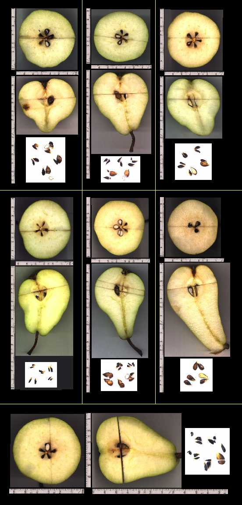
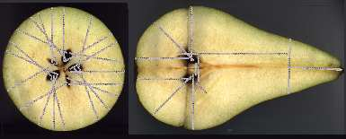
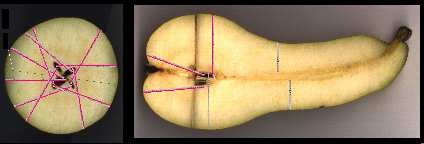
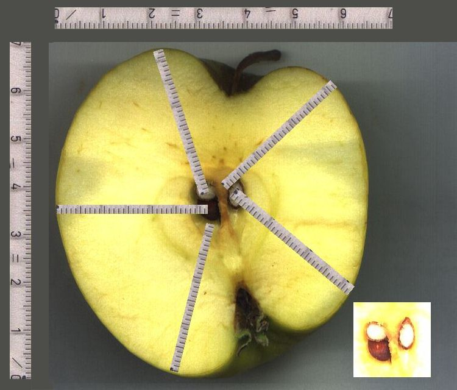
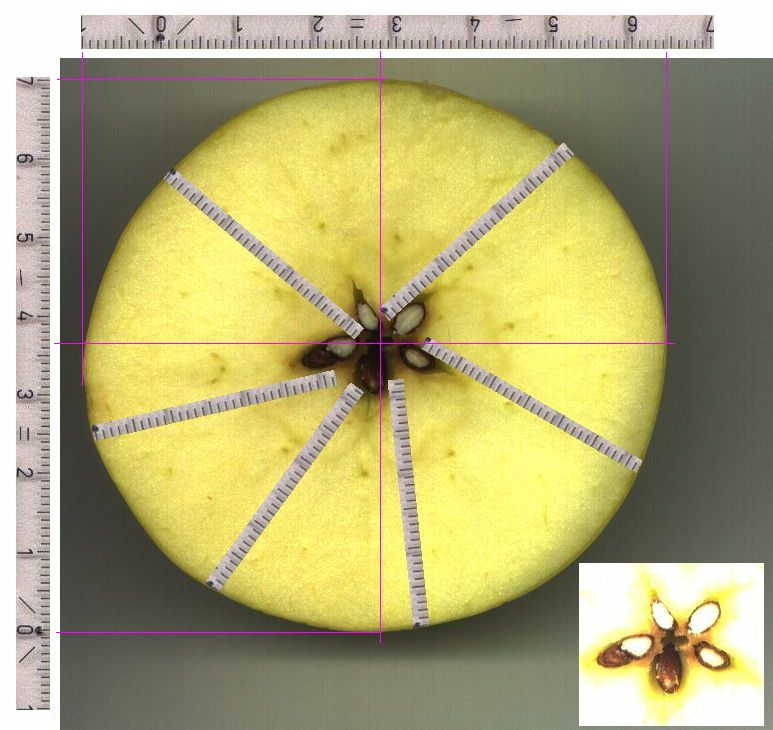
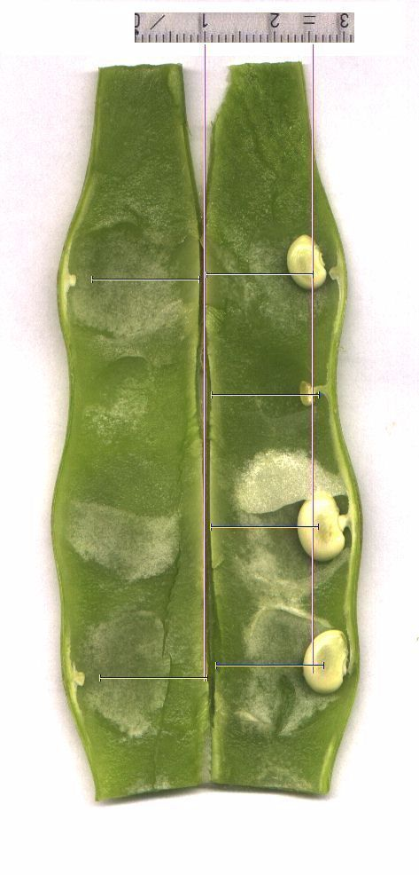
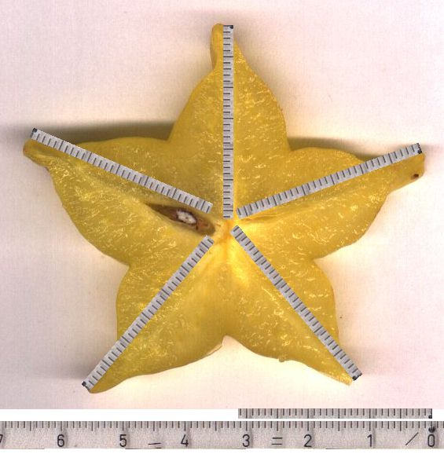
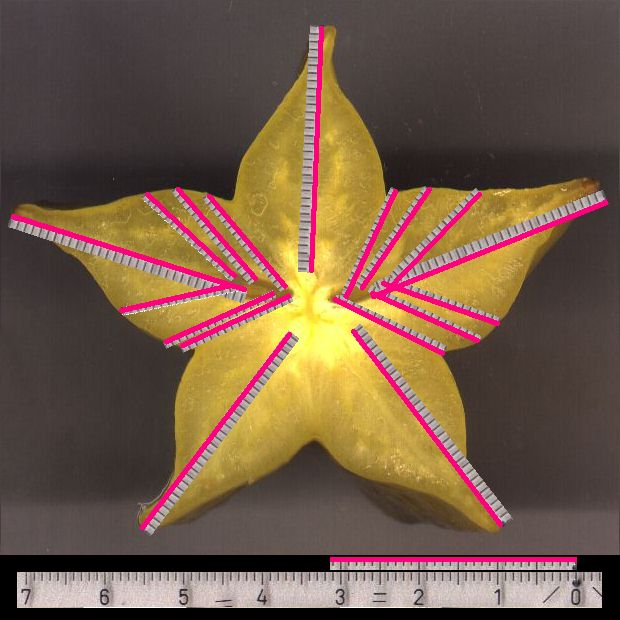

|
Birnen
Zur Birne -1-
-2-
-3-
Zur Birne -4-
-5-
-6-
Zur Birne
-7-

Diese Birnen sind zusammen in einer Netz-Packung
gekauft worden, außer Birne 6, dies ist eine andere Sorte
und wurde einzeln gekauft. In den vergrößerten Seiten
wurde nur dort eine rote Linie auf den eingetragenen Maßstab
gelegt, wo die 31,2mm-Resonanz zutrifft. Man sieht, daß große
Kerne bereits in diesen beiden Schnittebenen aus mehreren Richtungen
oder einem größeren Kugelsegmentwinkel die Energie bekamen.
Habe erst kürzlich an einigen pfeln erkannt
(hoffe, es bald noch einmal so zu finden zum Scannen), die ihre
verkmmerten Kerne nur als winzigkleine Punkte, so gro wie Fliegendreck,
in der 'Urform' erhalten hatten, da offenbar der Wachstumsstart
in der Spitze des Kerns (Aufhngung, eigentlich logisch, siehe Bohnen)
die Hauptrolle fr die sptere Gre spielt. Und hier, tief mitten
im Gehuse, knnen die seitlichen Abstnde (wie hier im Querschnitt
etwa bei Birne1 bei allen Kernen) nicht zur Wirkung kommen, sondern
nur die direkten rein radialen Abstnde zur Oberflche. Da ist bei
Birne 1 der einzige Unterschied im Lngsschnitt zu sehen: Die linke
Seite ist niedriger, und nur die rechte Seite trifft auch am Anfang
gut den Startpunkt an der Kernspitze. Die zusätzliche Energie
von der unteren Schräge (passt immer) ist birnenspezifisch
und macht, daß wenigstens dünne schwarze Kerne wachsen
Die Superbirne

Die Superbirne ist so supersymmetrisch, da sie eigentlich
5 (insgesamt 10) dicke Kerne haben mte. Da es das mglicherweise
nicht gibt (siehe Birne 6 als Ausweg), weil vielleicht das Birnenvolumen
das energetisch nicht hergibt, muten am anfnglichen Wettrennen
noch feinere Unterschiede die Entscheidung bringen (Schmetterlingseffekt),
feiner jedenfalls als bei anderen Normalbirnen.
Wenn ein Vogelkind im Nest zu klein ist, um sich vorzudrngeln,
wird es weniger Nahrung bekommen und immer weiter zurckbleiben,
wenn die Vogel-Eltern nicht genug Futter fr alle bringen. Das ist
ein rückgekoppeltes System. Die relativen Startbedingungen
entscheiden das Ende, bei konstanten Bedingungn. Wre der kleine
Vogel pltzlich der einzige, weil die anderen aus dem Nest fallen,
wrde er auch noch dick und rund, aber nur ohne die anderen.
Man sagt immer, man knne nicht pfel und Birnen vergleichen
(im Geschmack), aber hier kann man nichtmal Birne mit Birne vergleichen.
In der einen sind richtige Geometriekmpfe der Kerne abgelaufen,
in der anderen gabs einfach Kern-Totgeburten und fertig.
Fraktale kennen konvergentes Verhalten, divergentes Verhalten und
chaotisches Verhalten.
Lange Birne

Apfel
Hier sind im linken Fach zwei Kerne, in allen anderen nur einer.
Die beiden Kerne werden gut von allen Seiten mit 31,2mm -Stehwellen
erreicht. Rechts wird es diesmal fast zu kurz, aber in der Ebene
senkrecht dazu muß noch einiges an resonanter Energie hereingekommen
sein, der rechte Kern liegt in einer anderen Richtung (wurde beim
Zerteilen angeschnitten).

Bild ohne Eintragungen
Hier ein anderer Apfel von ähnlichem Aufbau. Diesmal ein Querschnitt.
In vier der fünf Fächer fanden sich je ein Kern, im linken
Fach zwei (verschieden ausgerichtet), weil es dort die Apfel-Asymmetrie
erlaubte. Die Doppelkerne können nebeneinander oder übereinander
angeordnet sein, je nach Richtung der Asymmetrie.

Bild ohne Eintragungen
Grüne Bohne

Bild ohne Eintragungen
Die beiden mittleren Bohnenkerne sind noch fest an
ihrer Aufhängung, die anderen wurden wieder hineingelegt (Aufhängung
links zu sehen).
Die zweite Bohne liegt im falschen Kurvenbogen, ihr
Abstand zur Außenwand war zu gering, so daß sie zwar
am Anfang etwas gewachsen ist, dann aber mit ihrem Bohnenkörper
nichts mehr einfangen konnte, weil immer nur die Verankerung getroffen
wird. Sie ist klitzeklein geblieben, aus Energiemangel verkümmert.
Habe solche Konstellationen in den 500 g Grünen Bohnen immer
wieder gefunden, die Abbildung ist typisch und kein Ausnahmefall.
Jetzt versteht man auch, warum bei den Apfelkernen
wenigstens der ganz innen liegende Teil des Kernes von der stehenden
Welle getroffen werden muß, weil dort das Wachstum beginnt.
Zu diesem Zeitpunkt ist sicherlich auch der Apfel/die Hülse
noch im Wachstum.
Wer dann zu spät kommt, wie dieser Bohnenkern
in der falschen Kurve, den bestraft das Leben ...
Sternfrucht (Karambole)

Bild ohne Eintragungen
Es ist sonnenklar, warum es nur einen Kern an dieser
Stelle gibt. Die anderen Sternspitzen sind einfach zu kurz.
Im nächsten Bild ein weiterer Schnitt einige
cm entfernt. Hier gibt es zwei Kerne, weil die andere Sternspitze
hier länger ist.

Bild ohne Eintragungen
|